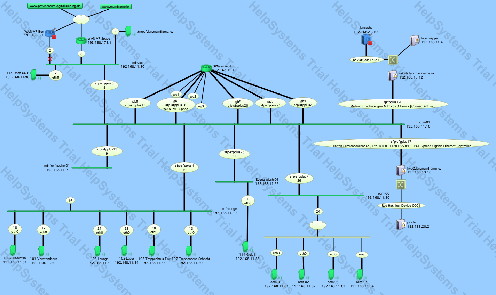
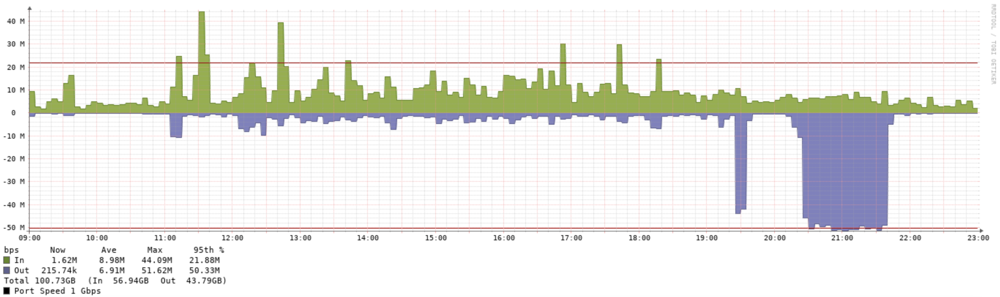
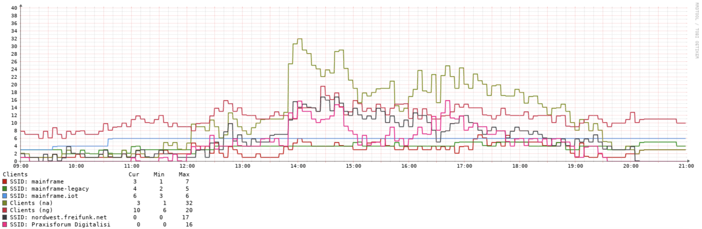
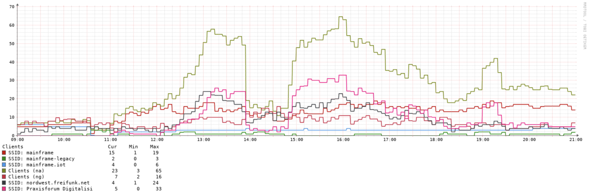

Praxisforum Digitalisierung
Zugegeben, eine Veranstaltung mit 180+ Anmeldungen durchzuführen, das kommt auch bei uns nicht alltäglich vor. Zwar richten wir häufiger Veranstaltungen wie z.B. das CoderDojo oder die Ersti LAN Party aus, aber diese bewegen sich i.d.R. bei unter 50 Personen. Die 3-4 fache Menge war auch für uns eine besondere Herausforderung und bedarf einer gewissen Vorbereitung sowie ordentlicher Planung.
Wir möchten euch in diesem Blogpost etwas über unsere Ideen, Anstrengungen und Erfahrungen berichten. Fokussiert auf den technischen Part der Infrastruktur.
Wer schonmal ein Event bzw. Netzwerk dieser Größe geplant hat, dem werden folgende Punkte bekannt vorkommen.
- Ausreichend große DHCP Range (/24 könnte mitunter knapp werden)
- Bewusst gering gesetzte Leasetime (um Adressen nicht unnötig lange blockiert zu haben)
- Ausreichende Kapazität im WAN, LAN, und WLAN.
Aufmerksame Leser des Blogs werden den letzten Beitrag über die Ersti LAN Party gelesen haben. Das dort beschriebene Problem mit unserem ISP bzw. dessen Modem konnte in der Zwischenzeit erfolgreich behoben werden, womit wir auf eine stabile Internetverbindung für das Praxisforum Digitalisierung zugreifen konnten.
Das übergeordnete Netzdesign auf der physischen Schicht sieht dabei wie folgt aus.


Das Besondere an dieser Situation war, dass wir das OCM, welches direkt ein Stockwerk über uns liegt, mit zusätzlichen Access Points unterstützten um die erhöhte Menge an Gästen performant bedienen zu können.
Im LAN Bereich nutzten wir für die Veranstaltung ein eigenes Event VLAN, welches primär über unsere WLAN-Infrastruktur zur Verfügung gestellt wurde. Wir entschieden uns für die Veranstaltung sowohl im OCM, als auch bei uns, dasselbe Netzwerk bereitzustellen. Das im OCM bereitgestellte WLAN führte entsprechend über unsere Routinginfrastruktur den Weg ins Internet.
Um der Menge an Gästen performant begegnen zu können, arbeiteten wir mit einem /23 Netzwerk (512 Adressen) sowie einer DHCP Leasetime von 60min bzw. max 120min. Somit war sichergestellt, dass nicht plötzlich der Pool an zu vergebenden Adressen ausgeschöpft ist.
Das WLAN erstreckt sich im Mainframe vom Treppenaufgang bis zur Toilette (ja wir haben auch auf der Toiletten gutes WLAN) mit insgesamt 5x 802.11ac fähigen Access Points.

Um ein möglichst leistungsfähiges WLAN anbieten zu können, ist die Infrastruktur so gebaut, dass es so gut wie keine Kanalüberlappungen mit anderen Access Points gibt und somit Interferenzen verhindert werden. Zudem werden die WLANs für Nutzerendgeräte exklusiv in 5 GHz angeboten, während IoT und anderer “Kleinscheiß” dafür im 2.4GHz Band beherbergt ist.
Für das Praxisforum Digitalisierung gab es eine eigene SSID welche standortübergreifend sowohl im Mainframe als auch im OCM zur Verfügung stand.
Wir knackten an diesem Freitag die Gesamtmenge von 200 Endgeräten im WLAN, mit einem Peak von 60+ Geräten auf dem Access Point in der Lounge.
Nachstehend sind die Verläufe des Tages für Usermenge pro Lokation dargestellt mit Zeitverlauf von 09:00 - 21:00 Uhr.



Als Fazit lässt sich sagen, die Vorbereitungen haben sich ausgezahlt. Die Infrastruktur blieb stabil und hat trotz der hohen Menge an Clients auf engem Raum gut funktioniert.
Wenn Ihr mehr davon wissen wollt, kommt gerne einfach vorbei - wir haben i.d.R von 19:00 - 24:00 geöffnet - oder meldet euch auf unserer Mailingliste an. Informationen dazu findet ihr jeweils unter: Kontakt